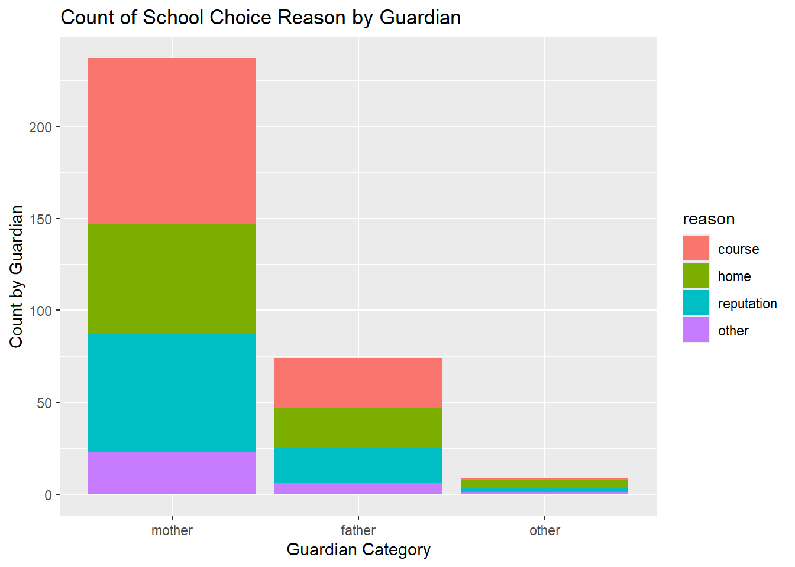
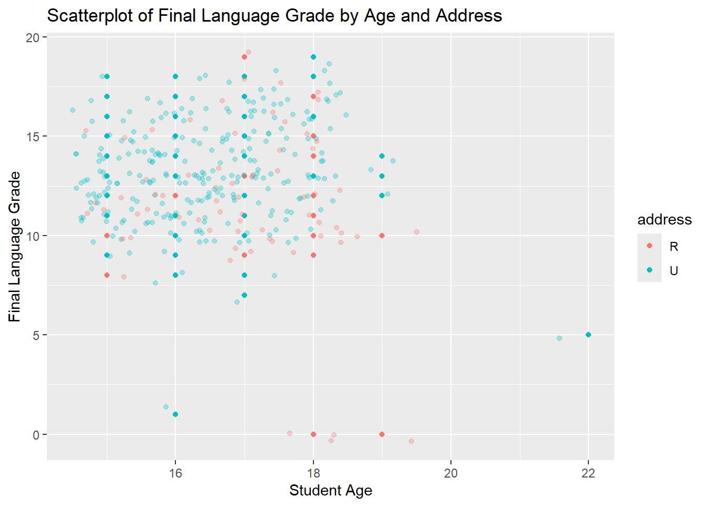
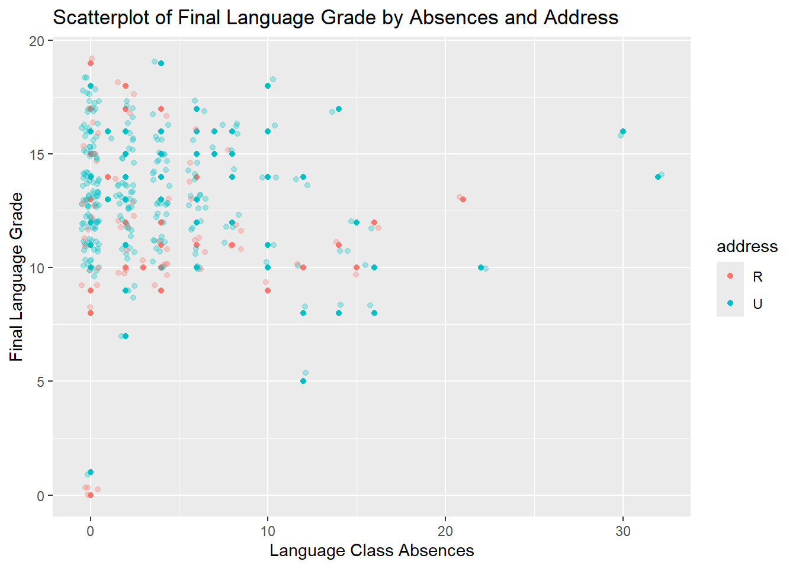
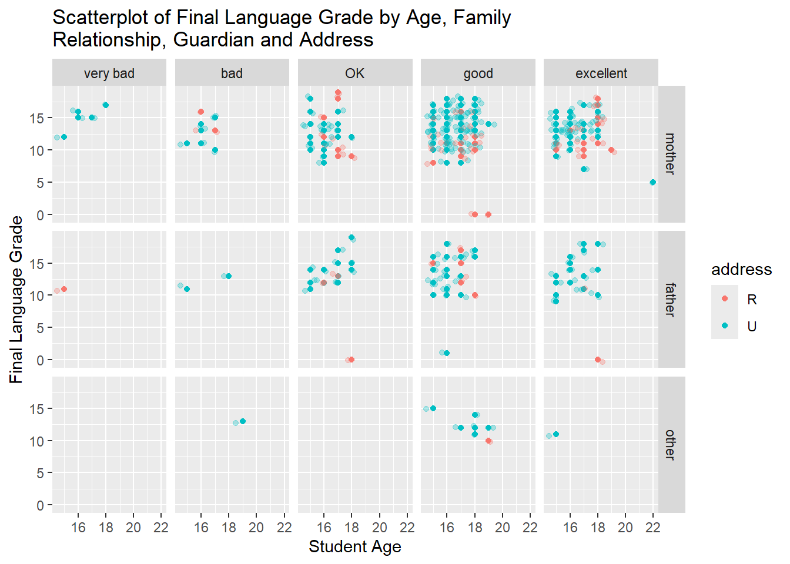
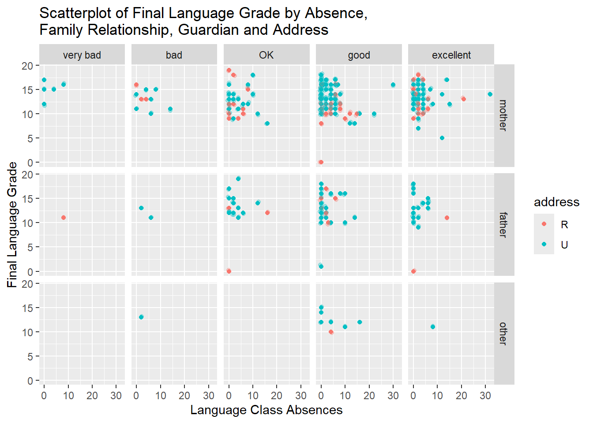

Modify the code provided with the download to read in the data from a local file source (your downloaded .csv files) and combine the two data frames. Use local paths as they do in their code.
d1=read.table("student-mat.csv",sep=";",header=TRUE)d2=read.table("student-por.csv",sep=";",header=TRUE)d3=merge(d1,d2,by=c("school","sex","age","address","famsize","Pstatus","Medu","Fedu","Mjob","Fjob","reason","nursery","internet"))print(nrow(d3)) # 382 students
[1] 382
read in and combine the data using functions from the tidyverse. Use an inner_join() on the variables they used in their code. Do you notice any issues? Make a note of the issue.
library(tidyverse)
── Attaching core tidyverse packages ──────────────────────── tidyverse 2.0.0 ──
✔ dplyr 1.1.4 ✔ readr 2.1.5
✔ forcats 1.0.0 ✔ stringr 1.5.1
✔ ggplot2 4.0.0 ✔ tibble 3.2.1
✔ lubridate 1.9.4 ✔ tidyr 1.3.1
✔ purrr 1.0.4
── Conflicts ────────────────────────────────────────── tidyverse_conflicts() ──
✖ dplyr::filter() masks stats::filter()
✖ dplyr::lag() masks stats::lag()
ℹ Use the conflicted package (<http://conflicted.r-lib.org/>) to force all conflicts to become errors
math =read_delim("student-mat.csv", delim =";",col_names =TRUE)
Rows: 395 Columns: 33
── Column specification ────────────────────────────────────────────────────────
Delimiter: ";"
chr (17): school, sex, address, famsize, Pstatus, Mjob, Fjob, reason, guardi...
dbl (16): age, Medu, Fedu, traveltime, studytime, failures, famrel, freetime...
ℹ Use `spec()` to retrieve the full column specification for this data.
ℹ Specify the column types or set `show_col_types = FALSE` to quiet this message.
por =read_delim("student-por.csv", delim =";",col_names =TRUE)
Rows: 649 Columns: 33
── Column specification ────────────────────────────────────────────────────────
Delimiter: ";"
chr (17): school, sex, address, famsize, Pstatus, Mjob, Fjob, reason, guardi...
dbl (16): age, Medu, Fedu, traveltime, studytime, failures, famrel, freetime...
ℹ Use `spec()` to retrieve the full column specification for this data.
ℹ Specify the column types or set `show_col_types = FALSE` to quiet this message.
Warning in inner_join(math, por, by = c("school", "sex", "age", "address", : Detected an unexpected many-to-many relationship between `x` and `y`.
ℹ Row 79 of `x` matches multiple rows in `y`.
ℹ Row 79 of `y` matches multiple rows in `x`.
ℹ If a many-to-many relationship is expected, set `relationship =
"many-to-many"` to silence this warning.
This warning means that, for the columns we specified in the inner join, values in Row 79 of the math data appear more than once in the por frame, and vice versa (values in Row 79 of the por data appear more than once in the math data. As a result, the inner join creates all possible combinations for those matches.
Use an inner_join() on all variables other than G1, G2, G3, paid, and absences. Use this form of the combined data in further exercises.
This code performs an inner join between the math and por data frames using a comprehensive set of columns as keys. This will keep only the rows where all these columns match in both data frames. If there are columns in math and por with the same name that are not included in the by argument, the resulting combined data frame will have those columns with .x and .y suffixes to distinguish them (absences, paid, G1, G2 and G3).
Next, for the math data, Portuguese, and combined data, choose four categorical variables you are interested in and convert those into factor variables in each tibble (use the same four variables in each). Use the mutate() function to accomplish this.
I chose guardian, reason, Mjob and Fjob
math |>mutate(guardian =as_factor(guardian), reason =as_factor(reason), Mjob =as_factor(Mjob), Fjob =as_factor(Fjob))
# A tibble: 395 × 33
school sex age address famsize Pstatus Medu Fedu Mjob Fjob reason
<chr> <chr> <dbl> <chr> <chr> <chr> <dbl> <dbl> <fct> <fct> <fct>
1 GP F 18 U GT3 A 4 4 at_home teach… course
2 GP F 17 U GT3 T 1 1 at_home other course
3 GP F 15 U LE3 T 1 1 at_home other other
4 GP F 15 U GT3 T 4 2 health servi… home
5 GP F 16 U GT3 T 3 3 other other home
6 GP M 16 U LE3 T 4 3 services other reput…
7 GP M 16 U LE3 T 2 2 other other home
8 GP F 17 U GT3 A 4 4 other teach… home
9 GP M 15 U LE3 A 3 2 services other home
10 GP M 15 U GT3 T 3 4 other other home
# ℹ 385 more rows
# ℹ 22 more variables: guardian <fct>, traveltime <dbl>, studytime <dbl>,
# failures <dbl>, schoolsup <chr>, famsup <chr>, paid <chr>,
# activities <chr>, nursery <chr>, higher <chr>, internet <chr>,
# romantic <chr>, famrel <dbl>, freetime <dbl>, goout <dbl>, Dalc <dbl>,
# Walc <dbl>, health <dbl>, absences <dbl>, G1 <dbl>, G2 <dbl>, G3 <dbl>
por |>mutate(guardian =as_factor(guardian), reason =as_factor(reason), Mjob =as_factor(Mjob), Fjob =as_factor(Fjob))
# A tibble: 649 × 33
school sex age address famsize Pstatus Medu Fedu Mjob Fjob reason
<chr> <chr> <dbl> <chr> <chr> <chr> <dbl> <dbl> <fct> <fct> <fct>
1 GP F 18 U GT3 A 4 4 at_home teach… course
2 GP F 17 U GT3 T 1 1 at_home other course
3 GP F 15 U LE3 T 1 1 at_home other other
4 GP F 15 U GT3 T 4 2 health servi… home
5 GP F 16 U GT3 T 3 3 other other home
6 GP M 16 U LE3 T 4 3 services other reput…
7 GP M 16 U LE3 T 2 2 other other home
8 GP F 17 U GT3 A 4 4 other teach… home
9 GP M 15 U LE3 A 3 2 services other home
10 GP M 15 U GT3 T 3 4 other other home
# ℹ 639 more rows
# ℹ 22 more variables: guardian <fct>, traveltime <dbl>, studytime <dbl>,
# failures <dbl>, schoolsup <chr>, famsup <chr>, paid <chr>,
# activities <chr>, nursery <chr>, higher <chr>, internet <chr>,
# romantic <chr>, famrel <dbl>, freetime <dbl>, goout <dbl>, Dalc <dbl>,
# Walc <dbl>, health <dbl>, absences <dbl>, G1 <dbl>, G2 <dbl>, G3 <dbl>
We’ve talked about the general process of conducting an EDA. You try to understand how your data is stored, what is missing, and you try to summarize the variables both numerically and visually to understand relationships within the data. Do the rest of these items on the combined data:
Look at how the data is stored and see if everything makes sense.
Looking at the output of the str() command. In addition to the changing of the four variables above into factors, the following changes would make sense. Many of them should be factors, and some should be converted to integer.
$ age : int [1:320] 18 17 15 16 16 16 17 15 15 15 …
From this output, there does not seem to be any missing data.
Categorical variables
Create a one-way contingency table, a two-way contingency table, and a three-way contingency table for some of the factor variables you created previously. Use table() to accomplish this. – Interpret a number from each resulting table (that is, pick out a value produced and explain what that value means.)
, , = teacher
course home reputation other
mother 8 5 5 2
father 2 2 1 2
other 0 0 0 0
, , = other
course home reputation other
mother 55 38 36 9
father 8 12 10 1
other 1 5 2 0
, , = services
course home reputation other
mother 19 14 15 10
father 15 6 5 2
other 0 0 0 1
, , = health
course home reputation other
mother 2 1 6 1
father 1 0 3 1
other 0 0 0 0
, , = at_home
course home reputation other
mother 6 2 2 1
father 1 2 0 0
other 0 0 0 0
cat("\n")
Interpretation of 1-way Contingency Table - there are 237 mothers that are guardians in the sample.
Interpretation of 2-way Contingency Table - 22 fathers chose the school because it was close to home.
Interpretation of 3-way Contingency Table - 8 mothers who are teachers chose the school because it was close to home.
Create a conditional two-way table using table(). That is, condition on one variable’s setting and create a two-way table. Do this using two different methods: – Once, by subsetting the data (say with filter()) and then creating the two-way table – Once, by creating a three-way table and subsetting it
ss <-table(combined$guardian, combined$Fjob, combined$reason)ss["mother", ,]
course home reputation other
teacher 8 5 5 2
other 55 38 36 9
services 19 14 15 10
health 2 1 6 1
at_home 6 2 2 1
cat("\n")
Create a two-way contingency table using group_by() and summarize() from dplyr. Then use pivot_wider() to make the result look more like the output from table().
`summarise()` has grouped output by 'guardian'. You can override using the
`.groups` argument.
# A tibble: 12 × 3
# Groups: guardian [3]
guardian reason count
<fct> <fct> <int>
1 mother course 90
2 mother home 60
3 mother reputation 64
4 mother other 23
5 father course 27
6 father home 22
7 father reputation 19
8 father other 6
9 other course 1
10 other home 5
11 other reputation 2
12 other other 1
`summarise()` has grouped output by 'guardian'. You can override using the
`.groups` argument.
# A tibble: 3 × 5
# Groups: guardian [3]
guardian course home reputation other
<fct> <int> <int> <int> <int>
1 mother 90 60 64 23
2 father 27 22 19 6
3 other 1 5 2 1
Create a stacked bar graph and a side-by-side bar graph. Give relevant x and y labels, and a title for the plots.
#Stacked Bar Graphg <-ggplot(data = combined , aes(x = guardian, fill = reason))g +geom_bar() +labs(title ="Count of School Choice Reason by Guardian", x ="Guardian Category", y ="Count by Guardian")

#Horizontal Bar Graphg <-ggplot(data = combined , aes(x = guardian, fill = reason))g +geom_bar() +labs(title ="Count of School Choice Reason by Guardian", x ="Guardian Category", y ="Count by Guardian") +coord_flip()
Numeric variables (and across groups)
The numeric variables are age, absences, and the three test grades variables (G1, G2, and G3) from each data set (math and Portuguese).
• Find measures of center and spread for three of these variables (including at least one G3 variable)
– Repeat while subsetting the data in a meaningful way.
Create a histogram, kernel density plot, and boxplot for two of the numeric variables across one of the categorical variables (that is, create graphs that can compare the distributions across the groups on the same plot (no faceting here)). Add appropriate labels and titles.
ggplot(combined, aes(x = absences.x , fill = address)) +geom_histogram(color='black') +labs(title ="Distribution of Absences in Math Class by Address", x ="Math Class Absences", y ="Number of Absences")
`stat_bin()` using `bins = 30`. Pick better value `binwidth`.
In this plot we can see that math class absences appears to have an Exponential Distribution and that the majority of students come from an Urban address.
ggplot(combined, aes(x = G3.x , fill = address)) +geom_histogram(color='black') +labs(title ="Distribution of Final Math Grade by Address", x ="Final Math Grade", y ="Number of Students")
`stat_bin()` using `bins = 30`. Pick better value `binwidth`.
In this plot we can see that the distribution of final grade in math is approximately normal. The zeros at the left end does seem high and probably should be investigated to see if this is a data error.
ggplot(combined, aes(x = absences.x , fill = address)) +geom_density(kernel ="gaussian") +labs(title ="Kernel Density of Absences in Math Class by Address", x ="Math Class Absences", y ="Density")
Here, the distribution of math class absences for rural students is similar to the distribution for urban students. The density at the end with rural absences greater than 70 compared to the high of 55 for urban might be interesting to investigate.
ggplot(combined, aes(x = G3.x , fill = address)) +geom_density(kernel ="gaussian") +labs(title ="Kernel Density of Final Math Grade by Address", x ="Final Math Grade", y ="Density")
In this plot, it appears that the distribution of final grade in math vs. address differs between rural and urban addresses.
ggplot(combined, aes(x = address, y = absences.x , fill = address)) +geom_boxplot() +labs(title ="Boxplot of Absences in Math Class by Address", x ="Address", y ="Math Class Absences")
The plot suggests that the median of math class absences is similar across rural and urban addresses. The range of the rural absences tops out at 75 compared to 55 for the urban addresses. The orange box with the median toward the bottom left suggests right skew for rural addresses. The blue box with the median toward the top suggest left skew for urban addresses.
ggplot(combined, aes(x = address, y = G3.x , fill = address)) +geom_boxplot() +labs(title ="Boxplot of Math Final Grade by Address", x ="Address", y ="Final Math Grade")
This plot suggests that final math scores for Urban and Rural addresses are similar. Here, the distribution of Rural scores appears symmetric. The distribution of urban scores is slightly left skewed. Note that the range of Urban students is wider. This seems counterintuitive. Smaller sample sizes usually leads to wider variation.
Create two scatterplots relating a G3 variable to other numeric variables (put G3 on the y-axis). You should jitter the points if they sit on top of each other. Color the points by a categorical variable in each. Add appropriate labels and titles.
# Check for overlapping points# sum(duplicated(combined[, c("age", "G3.x")]))# sum(duplicated(combined[, c("absences.x", "G3.x")]))ggplot(combined, aes(x = age, y = G3.y, color = address)) +geom_point() +geom_jitter(width =0.5, alpha =0.3) +labs(title ="Scatterplot of Final Language Grade by Age and Address", x ="Student Age", y ="Final Language Grade")

This plot suggest that final language scores are similar across age, except for the 22 year old points, which may truly be outliers. Address does not seem to have an effect on final language scores.
ggplot(combined, aes(x = absences.y, y = G3.y, color = address)) +geom_point() +geom_jitter(width =0.5, alpha =0.3) +labs(title ="Scatterplot of Final Language Grade by Absences and Address", x ="Language Class Absences", y ="Final Language Grade")

This plot suggest that final language scores slightly drop with absences. But there are a few students that had over 30 absences and still are close to the middle of the cloud of points. I find that interesting.
Repeat the scatter plot step but use faceting to obtain graphs at each setting of another categorical variable.
new_famrel_labels <-c("1"="very bad", "2"="bad", "3"="OK", "4"="good", "5"="excellent" )ggplot(combined, aes(x = age, y = G3.y, color = address)) +geom_point() +geom_jitter(width =0.5, alpha =0.3) +labs(title ="Scatterplot of Final Language Grade by Age, Family Relationship and Address", x ="Student Age", y ="Final Language Grade") +facet_wrap(~ famrel, labeller =labeller(famrel = new_famrel_labels))
This plot suggests that family relationship, age, and address do not seem to have an effect on final language grade. There are some points out of the cloud but the bulk of the mass of points supports my conclusion.
new_famrel_labels <-c("1"="very bad", "2"="bad", "3"="OK", "4"="good", "5"="excellent" )ggplot(combined, aes(x = absences.y, y = G3.y, color = address)) +geom_point() +geom_jitter(width =0.5, alpha =0.3) +labs(title =str_wrap("Scatterplot of Final Language Grade by Absences, Family Relationship and Address", width =50), x ="Student Age", y ="Final Language Grade") +facet_wrap(~ famrel, labeller =labeller(famrel = new_famrel_labels))
This plot suggests that family relationship, absences, and address do not seem to have an effect on final language grade. There are some points out of the cloud but the bulk of the mass of points supports my conclusion.
Repeat the scatter plot step but use faceting to obtain graphs at each combination of two categorical variables.
new_famrel_labels <-c("1"="very bad", "2"="bad", "3"="OK", "4"="good", "5"="excellent" )ggplot(combined, aes(x = age, y = G3.y, color = address)) +geom_point() +geom_jitter(width =0.5, alpha =0.3) +labs(title =str_wrap("Scatterplot of Final Language Grade by Age, Family Relationship, Guardian and Address", width =50), x ="Student Age", y ="Final Language Grade") +facet_grid(guardian ~ famrel, labeller =labeller(famrel = new_famrel_labels))

In this plot, it appears that the selected factors do not have an effect on final language grade. The other guardian students appear to have somewhat lower scores, but the sample size is small so it is difficult to draw any confident conclusions from this.
new_famrel_labels <-c("1"="very bad", "2"="bad", "3"="OK", "4"="good", "5"="excellent" )ggplot(combined, aes(x = absences.y, y = G3.y, color = address)) +geom_point() +geom_jitter(width =0.5, alpha =0.3) +labs(title =str_wrap("Scatterplot of Final Language Grade by Absence, Family Relationship, Guardian and Address", width =50), x ="Language Class Absences", y ="Final Language Grade" ) +facet_grid(guardian ~ famrel, labeller =labeller(famrel = new_famrel_labels))

This plot suggests that language class absences may have a slight effect on final language grade (more absences translates to lower grades). In the boxes that have at least 5 points, the points seem to fall off a bit to the left.
 numeric variables across one (1) categorical variable-1.png)
 numeric variables across one (1) categorical variable-1.png)

 numeric variables across one (1) categorical variable-1.png)